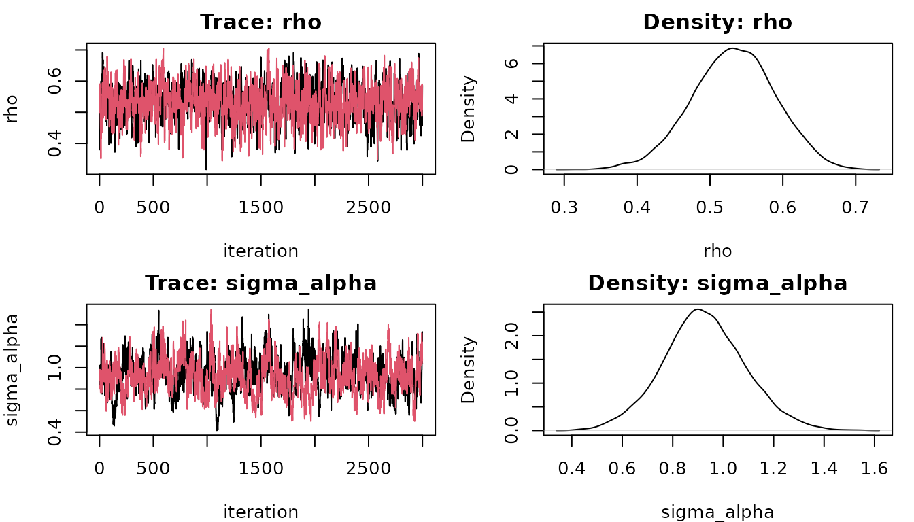

panelspatialprobit fits Bayesian spatial probit models
to panel data: the same
spatial units (regions, firms, households) observed over
periods, with a binary outcome that may depend on the outcomes of
neighbouring units. This vignette walks through a complete analysis.
Ordered outcomes are covered in
vignette("ordered-outcomes"), impacts in more depth in
vignette("impacts"), dynamic models in
vignette("dynamics"), and the evidence that the samplers
are correct in vignette("validation").
The model
For period , the latent outcomes follow
and we observe when . The pieces are:
- , an spatial weights matrix (zero diagonal, usually row-standardised) that says who is a neighbour of whom;
- , the spatial autoregressive parameter: the latent propensity of a unit depends on that of its neighbours;
- , optional effects of the neighbours’ regressors (, “Durbin” terms);
- , unit random effects that persist over time.
The model argument chooses the spatial terms. The
error-term models replace
by
,
where the error weights M default to W:
model |
|||
|---|---|---|---|
"sar" (default) |
yes | no | no |
"sdm" |
yes | yes | no |
"slx" |
no | yes | no |
"sem" |
no | no | yes |
"sdem" |
no | yes | yes |
"sarar" |
yes | no | yes |
"none" |
no | no | no |
Spatially correlated errors do not create spillovers: in
"sem" the indirect impacts are zero, but the error term
still changes the probabilities through the variance of the latent
outcome.
Spatial weights and data layout
The data must be a balanced panel in long format:
one row per unit and period, with columns identifying both. The weights
matrix carries the unit identifiers as row names, and every unit in the
data must match a row of W. The order of the rows in
data does not matter.
Here we use a 10 × 10 grid of units with rook contiguity and simulate data from a known model:
W <- psp_weights(rook_weights(10, 10), style = "W") # row-standardised
d <- sim_psprobit(W, T = 5, beta = c(-0.2, 1, -0.8), rho = 0.5,
sigma_alpha = 0.7, seed = 42)
head(d)
#> id time y x1 x2
#> 1 1 1 1 1.3709584 1.029140719
#> 2 2 1 0 -0.5646982 0.914774868
#> 3 3 1 1 0.3631284 -0.002456267
#> 4 4 1 1 0.6328626 0.136009552
#> 5 5 1 1 0.4042683 -0.720153545
#> 6 6 1 0 -0.1061245 -0.198124330psp_weights() also accepts dense matrices and
spdep nb or listw objects. With
real data you would typically build W with
spdep, for example
psp_weights(spdep::nb2listw(spdep::poly2nb(polygons)), ids = polygons$region_id).
Fitting
fit <- psprobit(y ~ x1 + x2, data = d, index = c("id", "time"), W = W,
model = "sar", effects = "random",
control = psp_control(iter = 3000, warmup = 1000, chains = 2,
seed = 1, progress = FALSE))
fit
#> Bayesian panel spatial probit (model = sar, effects = random)
#> Call: psprobit(formula = y ~ x1 + x2, data = d, index = c("id", "time"),
#> W = W, model = "sar", effects = "random", control = psp_control(iter = 3000,
#> warmup = 1000, chains = 2, seed = 1, progress = FALSE))
#>
#> (Intercept) x1 x2 rho sigma_alpha
#> -0.351 1.251 -0.915 0.533 0.925psp_control() sets the chain lengths, the number of
chains and cores, and a seed: results are reproducible given the seed,
whatever the number of cores. The defaults are 4 chains of 2,000 draws
after 1,000 warm-up iterations; we use 2 longer chains here. Binary data
carry little information per observation, so the chains are
autocorrelated and need more iterations than a linear model would.
Mixing is slowest with rare outcomes (roughly under 10% ones), outcomes
that barely vary within units, strong latent dynamics and
"sarar" with M = W. There, the intercept,
and
trade off against each other and their chains move slowly. The fix is
more iterations: increase iter and warmup (and
thin, to save memory) until the convergence warning
disappears. The “Convergence” section of ?psprobit gives
the details.
Checking convergence
The summary reports
and the bulk and tail effective sample sizes (ESS) for each parameter.
psprobit() warns when
or the bulk ESS is below 100 per chain.
summary(fit)
#> Bayesian panel spatial probit (model = sar, effects = random)
#> Call: psprobit(formula = y ~ x1 + x2, data = d, index = c("id", "time"),
#> W = W, model = "sar", effects = "random", control = psp_control(iter = 3000,
#> warmup = 1000, chains = 2, seed = 1, progress = FALSE))
#> Units: 100, periods: 5, observations: 500
#> Chains: 2, posterior draws: 6000
#> Outcome distribution:
#>
#> 0 1
#> 318 182
#>
#> Posterior summary:
#> mean sd q2.5 q97.5 rhat ess_bulk ess_tail
#> (Intercept) -0.351 0.117 -0.584 -0.123 1.002 569 1115
#> x1 1.251 0.139 0.991 1.542 1.005 405 727
#> x2 -0.915 0.117 -1.146 -0.686 1.005 507 1268
#> rho 0.533 0.057 0.419 0.640 1.001 744 1422
#> sigma_alpha 0.925 0.163 0.606 1.261 1.003 230 441
#>
#> In-sample classification: hit rate 0.756, AUC 0.843
#>
#> Impacts on P(y = 1) (posterior mean, sd, 95% interval; 500 draws)
#>
#> direct:
#> mean sd q2.5 q97.5
#> x1 0.217 0.016 0.187 0.247
#> x2 -0.159 0.014 -0.186 -0.132
#>
#> indirect:
#> mean sd q2.5 q97.5
#> x1 0.209 0.041 0.136 0.296
#> x2 -0.153 0.032 -0.221 -0.097
#>
#> total:
#> mean sd q2.5 q97.5
#> x1 0.427 0.047 0.339 0.530
#> x2 -0.312 0.040 -0.404 -0.243The truth here is
,
and
.
Trace and density plots come from plot(fit), and the draws
are available as a posterior draws object
(posterior::as_draws(fit)) for use with packages such as
bayesplot.

Interpreting the results: impacts
In a spatial model the coefficients are not marginal effects. A change in changes the latent outcome of unit and, through , those of its neighbours, their neighbours, and so on; the probit link then translates those latent changes into probability changes. The impacts summarise this (LeSage and Pace 2009):
- direct: the average effect of a unit’s own regressor on its own probability, including feedback through its neighbours;
- indirect: the average effect on the other units (the spillover);
- total: direct + indirect.
fit$impacts
#> Impacts on P(y = 1) (posterior mean, sd, 95% interval; 500 draws)
#>
#> direct:
#> mean sd q2.5 q97.5
#> x1 0.2174 0.0155 0.1873 0.2472
#> x2 -0.1590 0.0144 -0.1864 -0.1323
#>
#> indirect:
#> mean sd q2.5 q97.5
#> x1 0.2095 0.0413 0.1363 0.2961
#> x2 -0.1534 0.0319 -0.2214 -0.0969
#>
#> total:
#> mean sd q2.5 q97.5
#> x1 0.4269 0.0473 0.3386 0.5305
#> x2 -0.3124 0.0396 -0.4038 -0.2428Impacts are computed by default after fitting.
psp_impacts() recomputes them with other options:
-
type = "unit"conditions on the estimated random effects (impacts for the units in the sample) instead of averaging over them; -
by_period = TRUEalso reports impacts within each period; -
scale = "lesage_pace"reproduces the scaling used by thespatialprobitpackage, for comparison with published results.
vignette("impacts") explains the computation, which
models have spillovers, and how to use the draws.
imp_unit <- psp_impacts(fit, type = "unit", by_period = TRUE, draws = 200)
head(summary(imp_unit))
#> variable category effect period mean sd q2.5 q97.5
#> 1 x1 1 direct all 0.2208096 0.01492168 0.1892897 0.2486705
#> 2 x2 1 direct all -0.1618325 0.01363099 -0.1866772 -0.1392160
#> 3 x1 1 indirect all 0.2147444 0.04477170 0.1418654 0.3045209
#> 4 x2 1 indirect all -0.1575337 0.03469548 -0.2410049 -0.1014747
#> 5 x1 1 total all 0.4355539 0.05022449 0.3461200 0.5301409
#> 6 x2 1 total all -0.3193662 0.04154884 -0.4108998 -0.2524161Predictions and fit
predict() returns posterior mean probabilities (or the
latent index, or the most probable outcome) in the row order of the
data, and psp_classification() compares them with the
observed outcomes:
head(predict(fit))
#> [1] 0.5199544 0.1756604 0.4109442 0.5170297 0.5506444 0.4468923
cl <- psp_classification(fit)
cl$hit_rate
#> [1] 0.756
cl$auc
#> [1] 0.8430437
cl$confusion
#> predicted
#> observed 0 1
#> 0 271 47
#> 1 75 107Richer specifications
Spatial Durbin. model = "sdm" adds the
spatial lags of the regressors (columns named W_x1, …). The
durbin argument restricts them to some regressors. Impacts
combine
and
automatically.
Correlated random effects. Random effects assume
is independent of the regressors. When that is doubtful, the Mundlak
device adds each unit’s mean of the chosen regressors
(cre = ~ x1, columns mean_x1), and the
Chamberlain device adds their values in every period
(cre = list(type = "chamberlain", vars = ~ x1)). This is
the usual alternative to fixed effects in nonlinear panel models, which
suffer from the incidental-parameters problem when
is small.
Time effects. time_effects = TRUE adds
period dummies.
fit_sdm <- psprobit(y ~ x1 + x2, data = d, index = c("id", "time"), W = W,
model = "sdm", cre = ~ x1, time_effects = TRUE, impacts = FALSE,
control = psp_control(iter = 3000, warmup = 1000, chains = 2,
seed = 2, progress = FALSE))
round(coef(fit_sdm), 2)
#> (Intercept) x1 x2 W_x1 W_x2 mean_x1
#> -0.27 1.33 -0.95 -0.08 -0.05 0.04
#> time_2 time_3 time_4 time_5 rho sigma_alpha
#> 0.01 -0.30 -0.12 -0.14 0.53 1.02Dynamics. dynamic = psp_dynamic() adds
the previous period’s outcome (lag_y, and with
lag_Wy = TRUE its spatial lag W_lag_y). The
first period then serves only as the initial condition. By default the
random effects follow Wooldridge (2005): the first-period outcome
(init_y) and the unit means of the regressors are added to
the model, which deals with the correlation between the initial
condition and the random effects. The impacts of the regressors are then
short-run (within-period) impacts.
d_dyn <- sim_psprobit(W, T = 6, beta = c(-0.4, 1, -0.8), rho = 0.4,
sigma_alpha = 0.5, gamma = 0.8, seed = 3)
fit_dyn <- psprobit(y ~ x1 + x2, data = d_dyn, index = c("id", "time"), W = W,
dynamic = psp_dynamic(), impacts = FALSE,
control = psp_control(iter = 3000, warmup = 1000, chains = 2,
seed = 3, progress = FALSE))
#> Warning: Possible convergence problems (R-hat > 1.01 or bulk ESS < 200) for:
#> sigma_alpha. Consider more iterations.
round(coef(fit_dyn), 2)
#> (Intercept) x1 x2 lag_y init_y mean_x1
#> -0.64 1.05 -1.04 0.87 0.41 0.14
#> mean_x2 rho sigma_alpha
#> 0.39 0.51 0.17Because the outcome feeds back into later periods, a change in a
regressor keeps acting after it ends. psp_response_path()
traces this by simulating the outcome histories with and without the
change (using the same random numbers in both) and comparing the
probabilities period by period. Here
rises by one unit in the first modelled period only:
psp_response_path(fit_dyn, "x1", draws = 200, nsim = 10, seed = 1)
#> Response of P(y = 1) to a temporary shock of 1 in x1 (200 draws x 10 histories)
#>
#> Average change over all units:
#> horizon period mean sd q2.5 q97.5
#> 0 2 0.3189 0.0286 0.2715 0.3762
#> 1 3 0.1152 0.0292 0.0626 0.1713
#> 2 4 0.0424 0.0191 0.0134 0.0867
#> 3 5 0.0135 0.0086 0.0021 0.0330
#> 4 6 0.0059 0.0051 0.0004 0.0173The first row is the short-run impact. The later rows come only from
the lagged outcome, which decays at a rate set by lag_y.
type = "permanent" keeps the change in place, and
units = shocks only some units, in which case the
spillovers to the others are reported separately.
vignette("dynamics") covers the initial conditions problem,
response paths and latent dynamics in more detail.
Latent dynamics.
psp_dynamic(latent = TRUE) puts the persistence in the
latent outcome instead,
(Wang and Kockelman 2009),
with
reported as lag_z. All periods are modelled, and
probabilities and impacts integrate over the latent history.
Robust errors. errors = psp_t(df = 7)
replaces the normal errors by Student-t errors (the robit model), which
limits the influence of observations the model fits badly;
fit$v_mean shows which ones they are.
Spatially autocorrelated random effects.
effects = "spatial_random" lets the unit effects themselves
be spatially correlated,
with
,
so that neighbouring units share unobserved characteristics (Wang and
Kockelman 2009). The posterior of
is reported with the other parameters.
Time-varying weights. When the neighbourhood
structure changes over time (trade links, commuting flows, a network),
pass W as a list with one matrix per period, named by
period. Every period then uses its own matrix, in the spatial lag, the
Durbin terms, the spatial lag of the lagged outcome and the impacts:
Checking the model
Posterior predictive checks. psp_ppc()
simulates replicated outcomes from the posterior and compares them with
the data on three statistics in each period: the share of each outcome,
Moran’s I (spatial dependence) and, with several periods, the share of
units whose outcome repeats from the previous period (persistence).
Posterior predictive p-values near 0 or 1 point to features of the data
the model does not reproduce.
psp_ppc(fit, draws = 200, seed = 1)
#> Posterior predictive checks (200 replicates)
#> ppp = P(T(y_rep) >= T(y)); values near 0 or 1 signal misfit.
#>
#> share:
#> observed rep_mean rep_q2.5 rep_q97.5 ppp
#> P(y=1) t=1 0.44 0.398 0.29 0.52 0.245
#> P(y=1) t=2 0.38 0.341 0.26 0.43 0.260
#> P(y=1) t=3 0.35 0.420 0.32 0.51 0.920
#> P(y=1) t=4 0.35 0.358 0.27 0.46 0.600
#> P(y=1) t=5 0.30 0.301 0.21 0.40 0.560
#>
#> moran:
#> observed rep_mean rep_q2.5 rep_q97.5 ppp
#> Moran t=1 0.266 0.207 0.048 0.390 0.240
#> Moran t=2 0.234 0.183 0.032 0.317 0.265
#> Moran t=3 0.141 0.205 0.067 0.358 0.840
#> Moran t=4 0.047 0.184 0.034 0.314 0.960
#> Moran t=5 0.130 0.059 -0.080 0.211 0.175
#>
#> persistence:
#> observed rep_mean rep_q2.5 rep_q97.5 ppp
#> persist t=2 0.56 0.585 0.49 0.670 0.695
#> persist t=3 0.61 0.606 0.52 0.701 0.510
#> persist t=4 0.56 0.578 0.48 0.660 0.730
#> persist t=5 0.67 0.636 0.55 0.730 0.285Model comparison. The likelihood of a spatial probit
is a high-dimensional normal probability. psp_loglik()
estimates it by simulation (GHK), and logLik(),
AIC() and psp_dic() build on it. This is
experimental: the estimates carry Monte Carlo error, reported in
attr(, "mcse"). Pooled models and conditional likelihoods
are cheap to estimate precisely. The marginal likelihood of a
random-effects model is reliable only for small panels.
psp_dic(fit, draws = 100, reps = 500)Priors
The defaults are weakly informative:
,
(almost uniform on
),
and, for ordered models,
cut-points. Change them with psp_priors():
psp_priors(beta = prior_normal(0, 2.5), rho = prior_beta(2, 2),
sigma_alpha = prior_half_cauchy(0.5))Binary data carry limited information about , especially with few periods, so it is worth checking how much the posterior of moves away from its prior.
References
Albert, J. H. and Chib, S. (1993). Bayesian analysis of binary and polychotomous response data. Journal of the American Statistical Association 88, 669–679.
LeSage, J. P. and Pace, R. K. (2009). Introduction to Spatial Econometrics. CRC Press.
Wang, X. and Kockelman, K. M. (2009). Bayesian inference for ordered response data with a dynamic spatial-ordered probit model. Journal of Regional Science 49, 877–913.
Wooldridge, J. M. (2005). Simple solutions to the initial conditions problem in dynamic, nonlinear panel data models with unobserved heterogeneity. Journal of Applied Econometrics 20, 39–54.
Wooldridge, J. M. (2010). Econometric Analysis of Cross Section and Panel Data, 2nd ed. MIT Press.